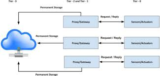

Multitier Architecture
What is Multitier Architecture?
Multitier Architecture (often called N-tier architecture) is a client-server architecture in which presentation, application processing, and data management functions are physically separated. This separation allows developers to modify or upgrade a specific layer without affecting the others.
The Common 3-Tier Model
The most common form of this architecture is the 3-tier model, which consists of:
- Presentation Tier (Front-end): The topmost level of the application (the user interface). This is what you see in your browser.
- Logic Tier (Application Tier): The "brain" of the application. It coordinates the application, processes commands, and makes logical decisions.
- Data Tier (Back-end): Where information is stored and retrieved from a database or file system.

Benefits of Using Multiple Tiers
By using a multitier approach, organizations gain Scalability (you can add more servers to just the logic tier if traffic increases) and Security (the data tier is hidden behind the logic tier, making it harder for hackers to reach the database directly).